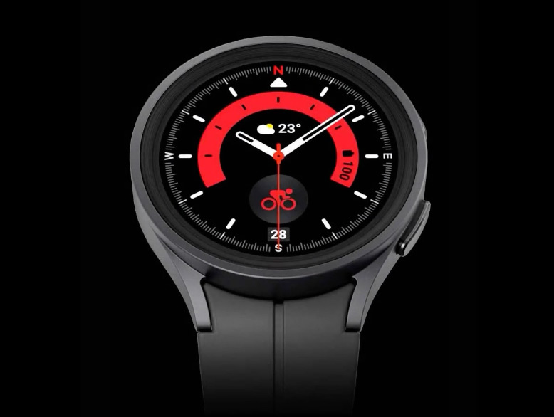

Duas vezes mais
resistente com corpo
de titânio e display
de Cristal de Safira

O display frontal ficou duas
vezes mais resistente graças
ao Cristal Safira. Até parece
indestrutível com caixa na cor
Titânio Preto ou Titânio Cinza
para aguentar o impacto.
Em comparação com o Galaxy Watch4 com base na dureza Vickers medida com carga de 200 gf. O Galaxy Watch5 Pro tem classificação à prova d'água para 50 metros conforme o padrão ISO 22810:2010. Não é apropriado para mergulho ou atividades aquáticas sob alta pressão. Se o dispositivo ou suas mãos estiverem molhados, eles devem ser completamente secos antes de manusear o relógio. A imagem acima é uma simulação do recurso de bússola para fins ilustrativos. A configuração da tela pode variar dependendo das configurações, da versão do software e está sujeita a alterações.